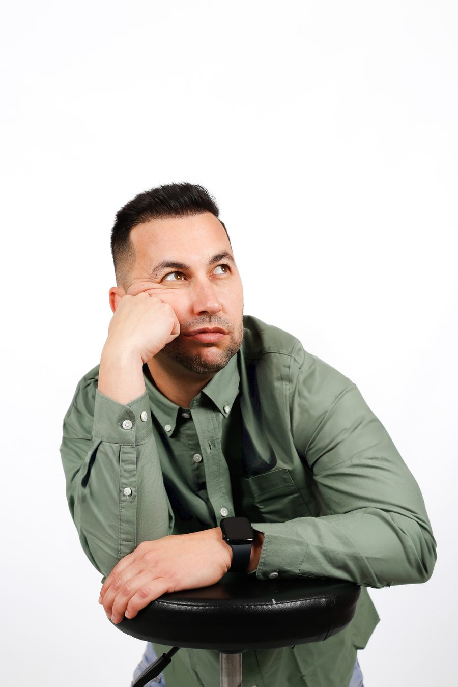

El niño al que
pusieron a dieta
Al nacer pesé 4 kilos 900 gramos. Cuando empecé a caminar, el pediatra le recomendó a mi madre que "me pusiera a dieta". No teníamos los conocimientos que hay hoy, así que mi madre hizo caso al señor de la bata blanca y empezó a controlar y restringir mis comidas.
El resultado fue desastroso. Pasaba tanta hambre que me escapaba de casa, subiendo de un segundo piso a un cuarto, para que mi tía me diera de comer a escondidas. Aquella experiencia fue bastante traumática: me encantaba comer y pasar hambre siendo tan pequeño me marcó.
"Si dejaba de cuidar mi alimentación, engordaba como por arte de magia."
Con el tiempo mi peso fue bajando y llegué a la adolescencia siendo más bien delgado. Pero el problema volvió años más tarde. Había fundado mi propio gimnasio a los 23 años y, cuando dejé de tener tanta actividad física, el peso volvió.
Era la segunda vez en mi vida que tenía que lidiar con el sobrepeso y, desde luego, no estaba dispuesto a hacerlo pasando hambre otra vez. Eso me llevó a buscar una solución real y a formarme como Técnico Superior en Dietética y Nutrición.
Después de aplicar lo aprendido en mi propia alimentación, quise empezar a ayudar a otras personas que, como tú y como yo, quieren mantener una vida saludable en la que el sobrepeso sea cosa del pasado.